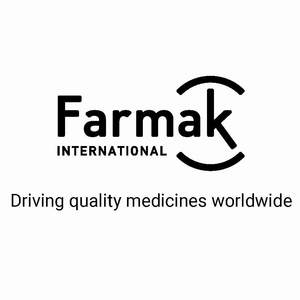

Trade Mark Journal No.2025/010 7 March 2025
UK00004154544 31 January 2025 (5,35)

- Class 5
- Adjuvants for medical purposes; cooling sprays for medical purposes; acaricides; aconitine; alkaloids for medical purposes; albumin dietary supplements; alginates for pharmaceutical purposes; alginate dietary supplements; algicides; aldehydes for pharmaceutical purposes; amino acids for medical purposes; analgesics; anaesthetics; antibiotics; vermifuges / anthelmintics; anti-uric preparations; antiseptics; medicine cases, portable, filled; first-aid boxes, filled; aluminium acetate for pharmaceutical purposes; acetates for pharmaceutical purposes; germicides; bacterial preparations for medical use; bacteriological preparations for medical use; balms for medical purposes; balsamic preparations for medical purposes; royal jelly for pharmaceutical purposes; tobacco-free cigarettes for medical purposes; bandages for dressings; adhesive bandages for medical purposes; bicarbonate of soda for pharmaceutical purposes; albuminous preparations for medical purposes; albuminous foodstuffs for medical purposes; biological preparations for medical purposes; biocides; biocides; bismuth subnitrate for pharmaceutical purposes; linseed meal for pharmaceutical purposes / flaxseed meal for pharmaceutical purposes; flour for pharmaceutical purposes/meal for pharmaceutical purposes; fish meal for pharmaceutical purposes; bromine for pharmaceutical purposes; bronchodilating preparations; vaginal washes for medical purposes; petroleum jelly for medical purposes; vaccines; tartar for pharmaceutical purposes; decoctions for pharmaceutical purposes; vitamin preparations; seawater for medicinal bathing; mineral waters for medical purposes; hydrated chloral for pharmaceutical purposes; dietary fibre / dietary fiber; charcoal for pharmaceutical purposes; astringents for medical purposes; gases for medical purposes; guaiacol for pharmaceutical purposes; sexual stimulant gels; haematogen / hematogen; haemoglobin / hemoglobin; haemostatic pencils / hemostatic pencils; hydrastine; hydrastinine; mustard for pharmaceutical purposes; mustard oil for medical purposes; mustard plasters / mustard poultices; glycerine for medical purposes; glycerophosphates; glucose for medical purposes; homogenized food adapted for medical purposes / homogenised food adapted for medical purposes; hormones for medical purposes, mud for baths; medicinal mud / medicinal sediment [mud]; vulnerary sponges; contraceptive sponges; gamboge for medical purposes; gurjun balsam for medical purposes; disinfectants; detergents for medical purposes; digitalin; infant formula; diastase for medical purposes; royal jelly dietary supplements; glucose dietary supplements; pollen dietary supplements; linseed dietary supplements / flaxseed dietary supplements; linseed oil dietary supplements / flaxseed oil dietary supplements; acai powder dietary supplements; propolis dietary supplements; wheat germ dietary supplements; dietetic beverages adapted for medical purposes; dietetic substances adapted for medical use; dietetic foods adapted for medical purposes; dietary supplements for human beings; whey protein dietary supplements; brewer's yeast dietary supplements; mineral dietary supplements; yeast for pharmaceutical purposes; yeast dietary supplements; eucalyptus for pharmaceutical purposes; eucalyptol for pharmaceutical purposes; plant extracts, other than essential oils, for pharmaceutical purposes; extracts of medicinal plants; herbal extracts, other than essential oils, for medical purposes; extracts of hops for pharmaceutical purposes; elixirs [pharmaceutical preparations]; enzymes for medical purposes; enzyme dietary supplements; enzyme preparations for medical purposes; esters for pharmaceutical purposes; cellulose esters for pharmaceutical purposes; ethers for pharmaceutical purposes; cellulose ethers for pharmaceutical purposes; febrifuges; gelatine for medical purposes; nicotine gum for use as an aid to stop smoking; chewing gum for medical purposes; nervines; isotopes for medical purposes; immunostimulants; Irish moss for medical purposes; iodine for pharmaceutical purposes; alkaline iodides for pharmaceutical purposes; iodides for pharmaceutical purposes; iodoform; casein dietary supplements; gum for medical purposes; camphor for medical purposes; camphor oil for medical purposes; cannabidiol for medical use; capsules for medicines; capsules made of dendrimer-based polymers, for pharmaceuticals; caustics for pharmaceutical purposes; caustic pencils; cachou for pharmaceutical purposes; quassia for medical purposes; quebracho for medical purposes; oxygen for medical purposes; gallic acid for pharmaceutical purposes; acids for pharmaceutical purposes; oxygen baths; cocaine for medical purposes; collagen for medical purposes; collodion for pharmaceutical purposes; compresses; chemical contraceptives; angostura bark for medical purposes; condurango bark for medical purposes; croton bark; mangrove bark for pharmaceutical purposes; myrobalan bark for pharmaceutical purposes; barks for pharmaceutical purposes; quinquina for medical purposes / cinchona for medical purposes; medicinal roots; rhubarb roots for pharmaceutical purposes; lint for medical purposes; collyrium; cream of tartar for pharmaceutical purposes; creosote for pharmaceutical purposes; blood for medical purposes; depuratives; pharmaceutical preparations for topical use; dill oil for medical purposes; starch for dietetic or pharmaceutical purposes; biological tissue cultures for medical purposes; cultures of microorganisms for medical use; curare; milk sugar for pharmaceutical purposes / lactose for pharmaceutical purposes; adhesive plasters / sticking plasters; lecithin for medical purposes; lecithin dietary supplements; medicines for alleviating constipation; medicines for human purposes; drugs for medical purposes; medicines for dental purposes; corn remedies; remedies for perspiration; remedies for foot perspiration; liniments; liquorice for pharmaceutical purposes; medicated hair lotions; lupulin for pharmaceutical purposes; magnesia for pharmaceutical purposes; sunburn ointments; honey-based ointment for medical purposes; ointments for pharmaceutical purposes; frostbite salve for pharmaceutical purposes; massage gels for medical purposes; massage candles for therapeutic purposes; medical dressings; surgical dressings; medicinal alcohol; medical preparations for slimming purposes; melissa water for pharmaceutical purposes; menthol; almond milk for pharmaceutical purposes; antibacterial handwashes; moleskin for medical purposes; mint for pharmaceutical purposes; vitamin supplement patches; nicotine patches for use as aids to stop smoking; medicinal drinks; vesicants; narcotics; linseed for pharmaceutical purposes / flaxseed for pharmaceutical purposes; medicinal infusions; tincture of iodine; tinctures for medical purposes; nutraceutical preparations for therapeutic or medical purposes; cachets for pharmaceutical purposes; medicinal oils, other than essential oils; almond oil for medical purposes; oil of turpentine for pharmaceutical purposes; opiates; opium for medical purposes; opodeldoc; mouthwashes for medical purposes; medicated toothpaste; pastilles for pharmaceutical purposes; pectin for pharmaceutical purposes; pepsins for pharmaceutical purposes; peptones for pharmaceutical purposes; hydrogen peroxide for medical purposes; pearl powder for medical purposes; antioxidant pills; tanning pills; appetite suppressant pills; slimming pills; eyepatches for medical purposes; nutritional supplements; pomades for medical purposes; powder of cantharides; pyrethrum powder; laxatives; bismuth preparations for pharmaceutical purposes; pre-filled syringes for medical purposes; haemorrhoid preparations/hemorrhoid preparations; preparations for callouses; chilblain preparations; dermatological preparations; diagnostic preparations for medical purposes used by medical laboratories; diagnostic preparations for medical purposes; bath preparations for medical purposes; air deodorizing preparations / air deodorising preparations; preparations for reducing sexual activity; acne treatment preparations; preparations for the treatment of burns; lice treatment preparations [pediculicides]; fumigation preparations for medical purposes; opotherapy preparations / organotherapy preparations; air purifying preparations; appetite suppressants for medical purposes; medicinal hair growth preparations; contact lens cleaning preparations; aloe vera preparations for pharmaceutical purposes; preparations of trace elements for human use; preparations of microorganisms for medical use; injectable dermal fillers; medicated toiletry preparations; anti-inflammatories; chemical preparations for the diagnosis of pregnancy; preparations to facilitate teething; poultices; purgatives / evacuants; propolis for pharmaceutical purposes; protein dietary supplements; radioactive substances for medical purposes; diagnostic biomarker reagents for medical purposes; radiological contrast substances for medical purposes; digestives for pharmaceutical purposes; cod liver oil; castor oil for medical purposes; ergot for pharmaceutical purposes; solutions for contact lenses; medicated eye-washes; solvents for removing adhesive plasters; cannabis for medical purposes / marijuana for medical purposes; mercurial ointments; sarsaparilla for medical purposes; lead water / Goulard water; sedatives / tranquillizers; wipes impregnated with disinfectants for hygiene purposes; tissues impregnated with pharmaceutical lotions; bouillons for bacteriological cultures for medical purposes/ media for bacteriological cultures for medical purposes / bacteriological culture mediums for medical purposes; serotherapeutic medicines; syrups for pharmaceutical purposes; soporifics; salts for mineral water baths; bath salts for medical purposes; smelling salts; potassium salts for medical purposes; mineral water salts; salts for medical purposes; sodium salts for medical purposes; malt for pharmaceutical purposes; malted milk beverages for medical purposes; alcohol for pharmaceutical purposes; douching preparations for medical purposes; suppositories; fumigating pastilles; lozenges for pharmaceutical purposes; therapeutic preparations for the bath; thermal water; tetrahydrocannabidinol [THC] for medical use; thymol for pharmaceutical purposes; gentian for pharmaceutical purposes; tonics [medicines]; medicinal herbs; sedatives / tranquillizers; pharmaceutical preparations; pharmaceutical preparations for treating dandruff; pharmaceutical preparations for skin care; pharmaceutical preparations for treating sunburn; lime-based pharmaceutical preparations; pharmaceuticals; phenol for pharmaceutical purposes; fennel for medical purposes; ferments for pharmaceutical purposes; injectable dermal fillers; phytotherapy preparations for medical purposes; formic aldehyde for pharmaceutical purposes; phosphates for pharmaceutical purposes; fungicides; chemical preparations for medical purposes; chemical preparations for pharmaceutical purposes; chemical reagents for medical purposes; chloroform; flowers of sulfur for pharmaceutical purposes; medicated sweets / medicated candies; crystallized rock sugar for medical purposes; sugar for medical purposes; herbal teas for medicinal purposes; bath tea for therapeutic purposes; medicinal tea; asthmatic tea; jujube, medicated; jalap.
- Class 35
- Administrative processing of purchase orders; administrative services for medical referrals; administration of consumer loyalty programs; cost price analysis; business auditing; financial auditing; auctioneering; outsourced administrative management for companies; accounting; negotiation of business contracts for others; market studies; opinion polling; invoicing; arranging and conducting of commercial events; payroll preparation; tax preparation; demonstration of goods; business inquiries; administrative assistance in responding to calls for tenders / administrative assistance in responding to requests for proposals [RFPs]; business management assistance; commercial or industrial management assistance; business research; economic forecasting; providing user reviews for commercial or advertising purposes; providing business information via a website; providing business information; providing telephone directory information; providing commercial information and advice for consumers in the choice of products and services; providing user rankings for commercial or advertising purposes / providing user ratings for commercial or advertising purposes; compilation of information into computer databases; compilation of statistics; web indexing for commercial or advertising purposes; interim business management; commercial administration of the licensing of the goods and services of others; computerized management of medical records and files; computerized file management; personnel management consultancy; business management consultancy; consultancy regarding advertising communication strategies; consultancy regarding public relations communication strategies; business organization consultancy; marketing; influencer marketing; marketing in the framework of software publishing; targeted marketing; marketing through product placement for others in virtual environments; marketing research; provision of an online marketplace for buyers and sellers of goods and services; provision of an online marketplace for buyers and sellers of downloadable digital image files authenticated by non-fungible tokens [NFTs]; writing of curriculum vitae for others / writing of résumés for others; writing of publicity texts; scriptwriting for advertising purposes; book-keeping / accounting; word processing; updating of advertising material; updating and maintenance of data in computer databases; updating and maintenance of information in registries; search engine optimization for sales promotion / search engine optimisation for sales promotion; organization of exhibitions for commercial or advertising purposes; organization of trade fairs; rental of advertising space; shop window dressing; business appraisals; personnel recruitment; business management and organization consultancy; business intermediary services relating to the matching of potential private investors with entrepreneurs needing funding; commercial information agency services; employment agency services; advisory services for business management; business efficiency expert services; outsourcing services [business assistance]; competitive intelligence services; business consultancy services for digital transformation; corporate communications services; layout services for advertising purposes; appointment reminder services [office functions]; data processing services [office functions]; website traffic optimization / website traffic optimisation; price comparison services; sales prospecting for others; preparation of business profitability studies; market intelligence services; procurement services for others [purchasing goods and services for other businesses]; media relations services; appointment scheduling services [office functions]; gift registry services; tax filing services; import-export agency services; lead generation services; business intermediary services relating to the matching of various professionals with clients; advertising agency services / publicity agency services; advertising services to create brand identity for others; business partnership search; public relations; commercial lobbying services; commercial intermediation services; wholesale services for pharmaceutical, veterinary and sanitary preparations and medical supplies; retail services for pharmaceutical, veterinary and sanitary preparations and medical supplies; data search in computer files for others; sponsorship search; presentation of goods on communication media, for retail purposes; publication of publicity texts; radio advertising; advertising / publicity; pay per click advertising; outdoor advertising; advertising by mail order; direct mail advertising; online advertising on a computer network; distribution of samples; dissemination of advertising matter; development of marketing concepts; development of advertising concepts; development of business organization strategies relating to corporate social responsibility; business investigations; systemization of information into computer databases; drawing up of statements of accounts; compiling indexes of information for commercial or advertising purposes; consumer profiling for commercial or marketing purposes; sales promotion for others; promotion of goods and services through sponsorship of sports events; promotion of goods through influencers; production of advertising films; production of teleshopping programmes / production of teleshopping programs; television advertising, telemarketing services, negotiation and conclusion of commercial transactions for third parties; professional business consultancy.
Farmak AG
Representative: ip21 Limited